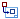

Select Attachment dialog box
You can use the Select Attachment dialog box to create additional drawing views of a model. This dialog box displays the model documents that are currently placed in the draft document and allows you to select another part or assembly to use as the basis for the next part view.
- Parts
-
Displays the documents that are currently placed in the drawing view in a folder tree structure.
As you click a part name in the list of parts, the part model is displayed in the Preview pane, and all instances of it are highlighted in existing drawing views.
Note:The list of parts is affected by the current setting of the Create drawing view independent of assembly check box.
- Preview
-
Displays a bitmap image of the document if a preview image was saved for the file.
- Browse
-
Opens a dialog box that allows you to search for a document.
- .cfg, PMI model view, or Zone
-
For an assembly model, lists the names of available display configurations, 3D PMI model views, and zones that can be used to generate a drawing view.
-
 – Indicates a display configuration.
– Indicates a display configuration. -

– Indicates a 3D PMI model view. -
– Indicates a zone.
Example:-
You can hide parts or weld beads in the assembly document, save the display configuration to a name you define, then use that display configuration when creating the drawing view. For more information, see the Using display configurations Help topic.
-
If you select a PMI model view created with the View command, then the model view controls the display states of parts in an assembly.
-
If you used the Create Zone command to define a rectangular volume of space based on one or more assembly components, then you can create a drawing view of the components that are contained within the boundary of the zone.
-
- Create drawing view independent of assembly
-
When this box is checked, creates a drawing view of the part currently selected in the Parts pane. This shortens the list of parts to show only one occurrence of each unique component at each level. In a large assembly, this makes it faster and easier to navigate the list of parts.
When this box is unchecked, creates an assembly part view of multiple selected components, parts, or subassemblies within the context of the top-level assembly. This ensures that item balloons on the added part views match the item balloons on the drawing view of the assembly. This is the default mode for placing additional views. It also produces a full list of all assembly component occurrences in the Parts pane. Use this list to choose the specific occurrences of parts that you want to show in the context of the top-level assembly. To learn how to do this, see Create assembly part views with the View Wizard.
Note:You can use the following keyboard combinations to view and select multiple parts in the list:
Use these keys
To
Double-click
Expand an assembly.
Shift+double-click
Expand all assemblies within a node in the parts list structure.
Shift+click
Select additional items.
Ctrl+click
Select and deselect items.
How do I
Change drawing view orientationLook up more details
Select Model dialog boxDrawing View Creation Wizard (Drawing View Options)
Advanced Edge Display Options dialog box
Drawing View Layout dialog box (Create or Modify)
Custom Orientation dialog box
Drawing View Creation Wizard (Saved Settings)
Drawing View Creation Wizard (Select Family of Assembly Member)
Drawing View Creation Wizard (Alternate Position Assembly)
Quick links
Drawing production workflowsSheet scale and drawing view scale
Add custom drawing view scales to Solid Edge
Modifying captions
Drawing view properties
Drawing View Properties dialog box
Drawing view manipulation
Drawing View Wizard tab (Solid Edge Options dialog box)